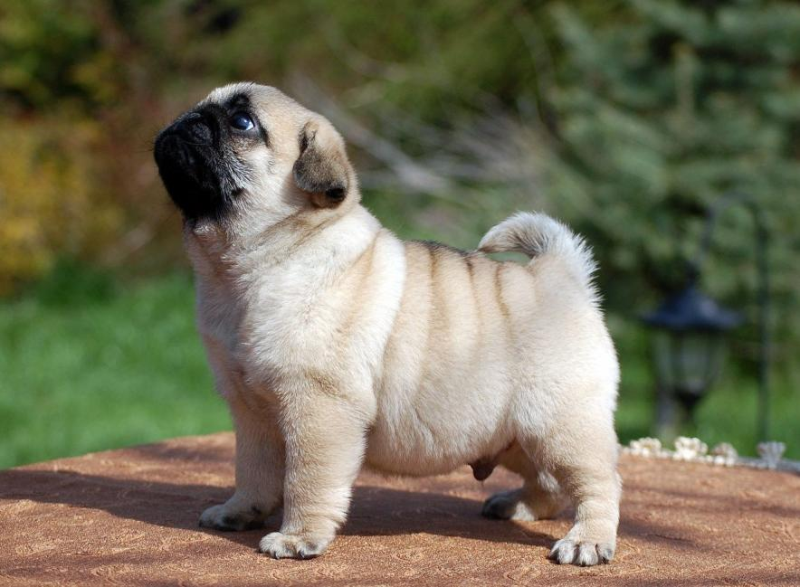
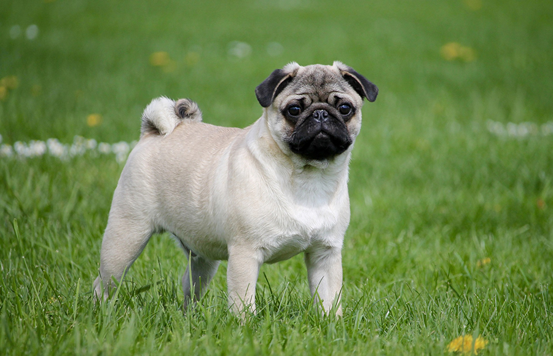

МОЙ ПИТОМЕЦ
Это мой домашний любимец. Его зовут Майк. Ему 3 года и он породы мопс. Собака с живым, веселым и при этом уравновешенным характером, благородная и привязанная к хозяину.

Возраст мопса - 1 месяц

Возраст мопса - 5 месяцев
Возраст мопса - 3 года
Общая характеристика для мопса:
- Рост 28-32см
- Вес 6,3-8,1кг
- Шерсть гладкая
- Окрас: абрикосовый, серебристый, бежевый и черный
- Продолжительность жизни 13-15лет
Питание доля мопсов:
- Сухой корм для мопсов
-
Натуральная пища для мопсов:
- мясо не жирное
- субпродукты говяжьи
- фрукты, зелень и овощи
- молоко
- кисломолочные продукты
- каши
Соотношение сухого и натурального корма
75%